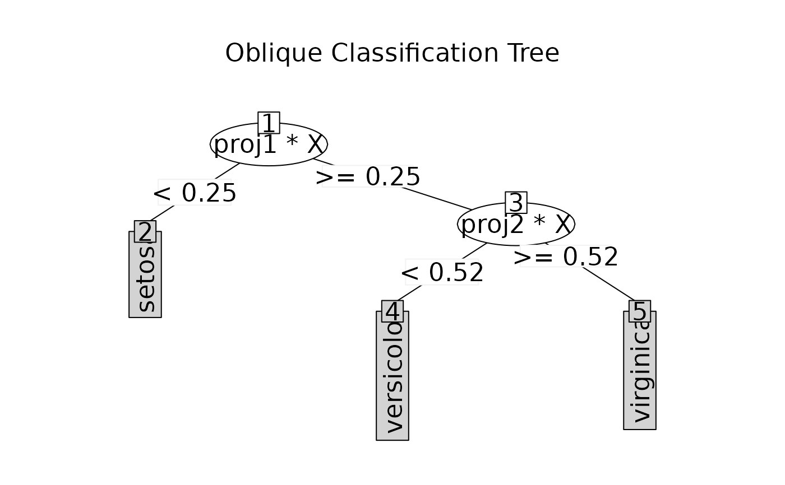

To make ODT object to objects of class party.
Usage
# S3 method for class 'ODT'
as.party(obj, data, ...)References
Lee, EK(2017) PPtreeViz: An R Package for Visualizing Projection Pursuit Classification Trees, Journal of Statistical Software.
Examples
data(iris)
tree <- ODT(Species ~ ., data = iris)
#> Warning: You are creating a tree for classification
tree
#>
#> =============================================================
#> Oblique Classification Tree structure
#> =============================================================
#>
#> 1) root
#> node2)# proj1*X < 0.25 -> (leaf1 = setosa)
#> node3) proj1*X >= 0.25
#> node4)# proj2*X < 0.52 -> (leaf2 = versicolor)
#> node5)# proj2*X >= 0.52 -> (leaf3 = virginica)
plot(tree)

party.tree <- as.party(tree, data = iris)
party.tree
#>
#> Model formula:
#> Species ~ Sepal.Length + Sepal.Width + Petal.Length + Petal.Width
#>
#> Fitted party:
#> [1] root
#> | [2] proj1*X >= 0.24576
#> | | [3] proj2*X >= 0.52235: virginica (n = 54, err = 7.4%)
#> | | [4] proj2*X < 0.52235: versicolor (n = 46, err = 0.0%)
#> | [5] proj1*X < 0.24576: setosa (n = 50, err = 0.0%)
#>
#> Number of inner nodes: 2
#> Number of terminal nodes: 3
plot(party.tree)